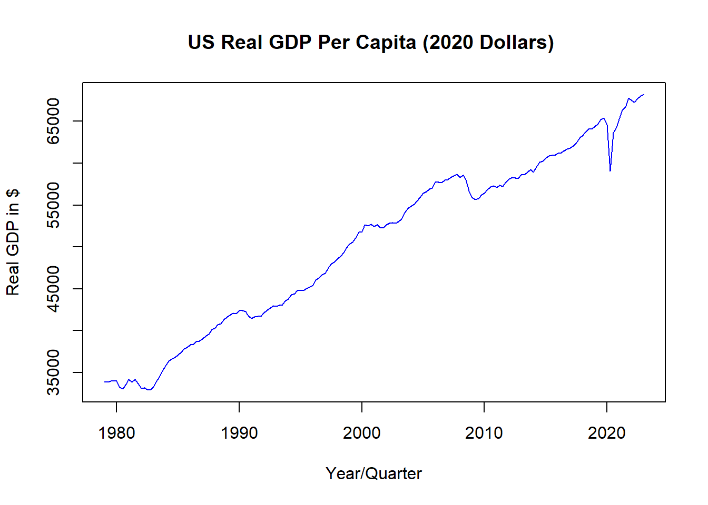
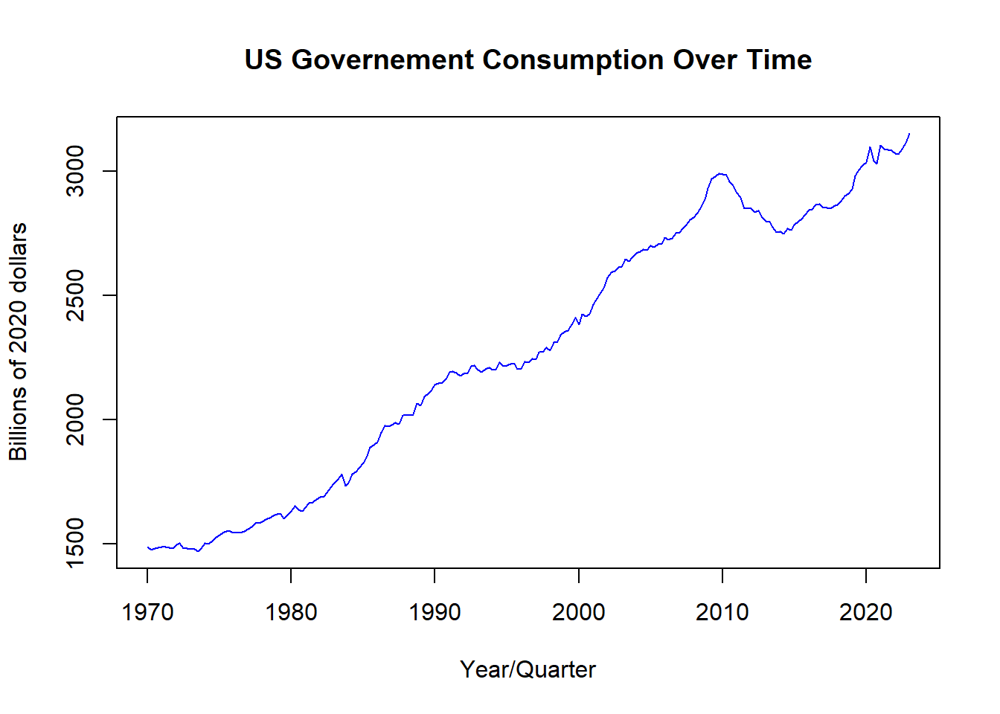
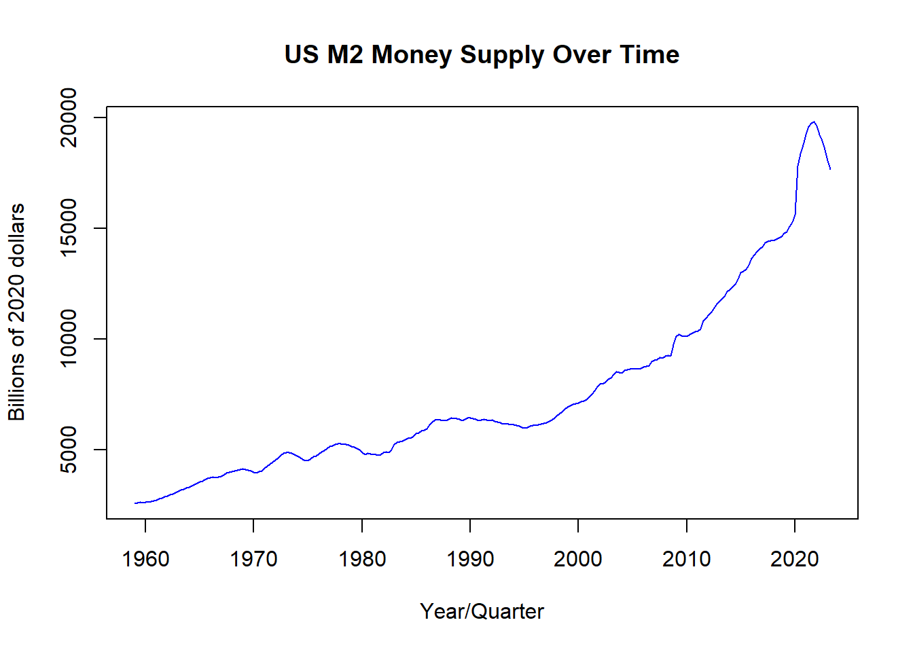
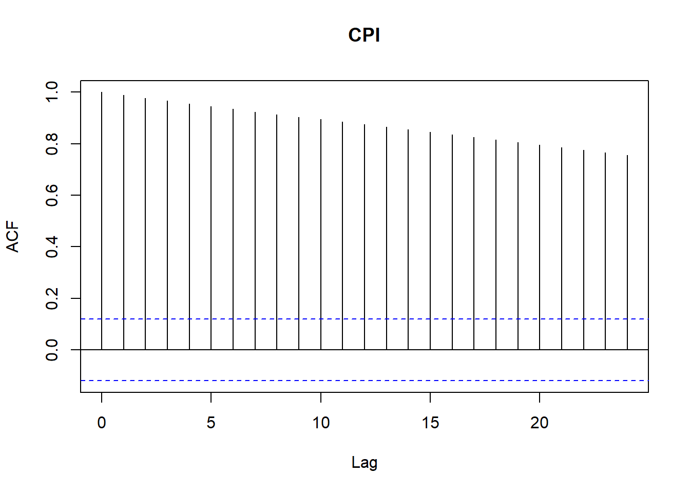
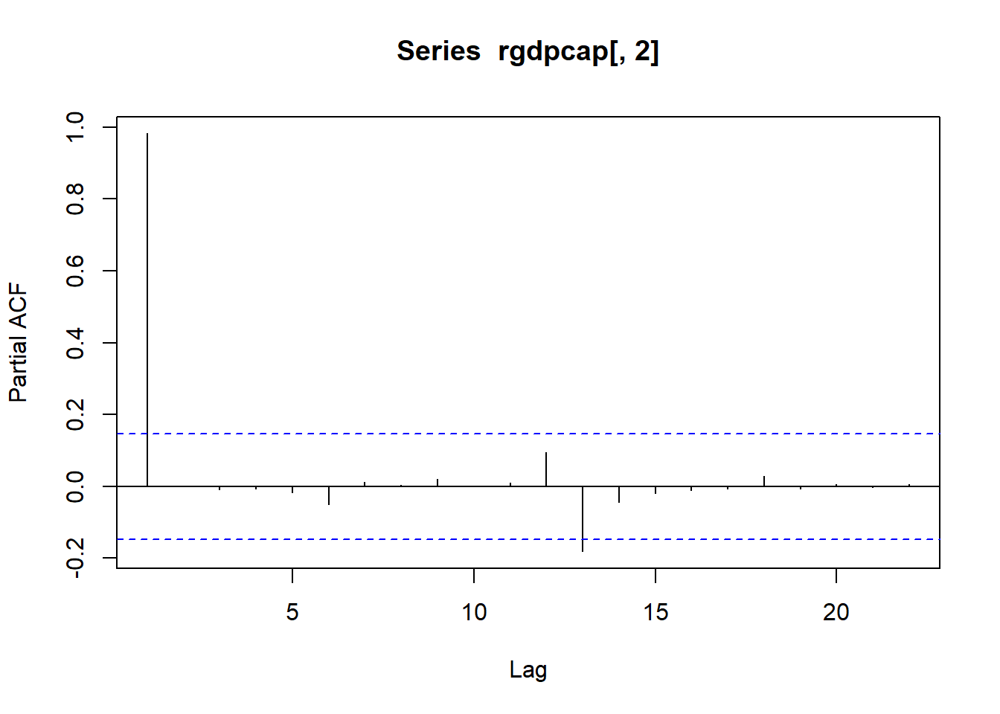
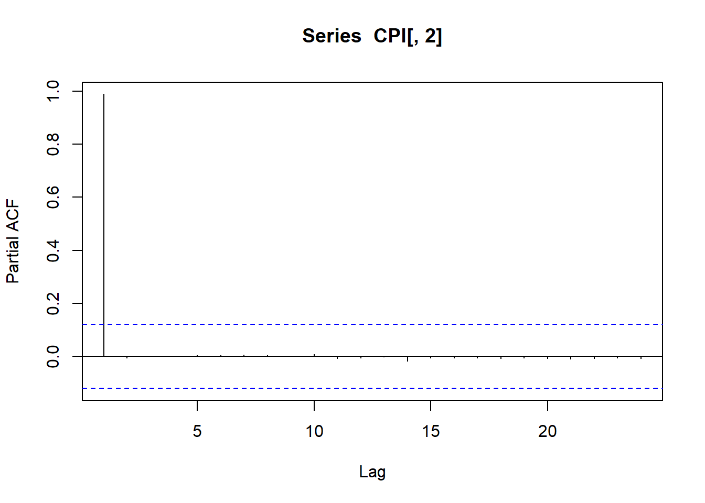
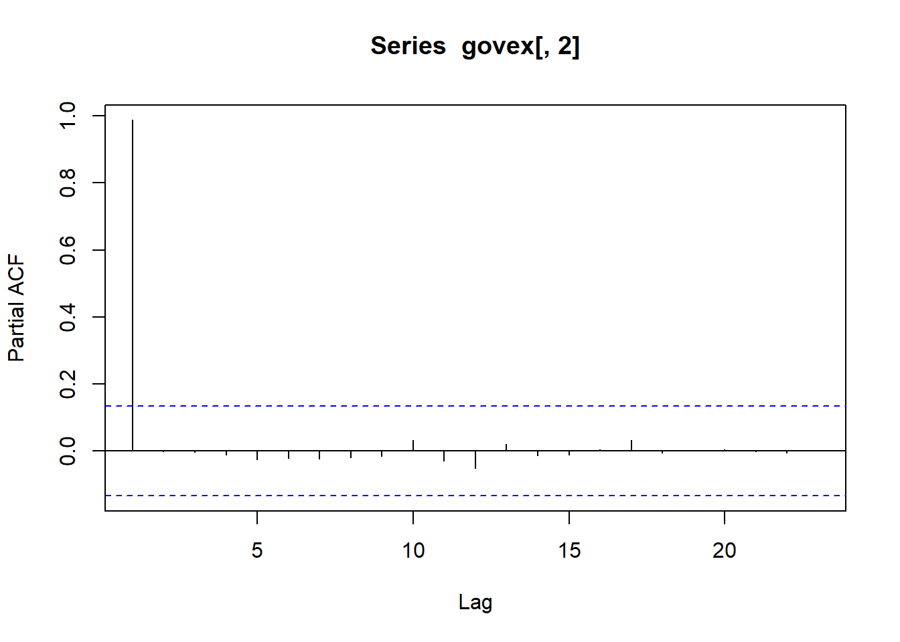

The goal of this research projectis to analyze the impact of unconditional government stipends on the U.S. economy, such as stimulus checks. To identify these effects I will analyze the effects of the stimulus checks and increased unemployment benefits issued by the US government in the wake of the COVID-19 pandemic.
This is an important topic as inequality rises direct government action may become increasingly necessary. Increased taxation on the rich and targeted government programs can only do so much to help those at the lower and middle ends of income. Especially as the groups in need of help become larger and their needs more diverse, the high administrative costs of judging who gets the benefits and what they are applicable to may become untenable. In this case, regular stimulus payments or higher unemployment benefits may become necessary to the continued economic health of the country. However, without knowing the effects of these methods, it is difficult to say whether or not they would do more harm than good.
Data
For the purpose of this analysis data the United States Federal Reserve will be utilized. This source uses government data and is considered highly reliable. A potential issue is the information available being limited by the frequency with which the government collects data. To counter this, the estimates will use a long history and quarterly data which is the most frequent commonly available data.
The core factors chosen, median income, gdp per capita, and unemployment, were chosen for widely being considered to be strong indicators of economic health. An estimated four lags are used as this is quarterly data so by incorporating four lags seasonal effects are adequately accounted for.
Median income is chosen over average income as, due to income disparity in the united states, there are large distortions in the average compared to the median. As stimulus payments and increased unemployment benefits are likely to more significantly impact lower income individuals it was determined that the median income would prove more suitable
GDP per capita is selected as it accounts for fluctuations in population over time instead of including effects that could be simple shifts in total population
Unemployment is utilized at it is of paramount concern in either confirming or assuaging concerns that, with relatively less incentive to work, that a portion of the population will elect not to work.
#load requisite packageslibrary(fredr)library(zoo)library(dplyr)library(coda)#set key for accessing FRED datafredr_set_key("f1d6de070cd07cd6028872a3bc573657")#Load in Fred data#Real GFP Per Capita and Unemployment Rate and median earningsrgdpcap =fredr(series_id ="A939RX0Q048SBEA")urate =fredr(series_id ="UNRATE")mearn =fredr(series_id ="LES1252881600Q")#keep only unemployment rate and date to avoid errorsurate =subset(urate, select =c(date, value))#Change unemployment data to quarterlyurate = urate %>%group_by(date =format(as.yearqtr(date, "%b-%Y"), "%YQ%q")) %>%summarise_all(mean)#pull only needed valuesrgdpcap =subset(rgdpcap, select =c(date, value))#rename column names to be more easily interpretedcolnames(rgdpcap) =c("Date", "Real GDP Per Capita")#Change date to quarters to keep consistentrgdpcap$Date =as.yearqtr(rgdpcap$Date,format ="%Y-%m-%d")#rename column names to be more easily interpretedcolnames(urate) =c("Date", "Unemployment Rate %")#pull only needed valuesmearn =subset(mearn, select =c(date, value))#rename column names to be more easily interpretedcolnames(mearn) =c("Date", "Weekly Earnings")#Change date to quarters to keep consistentmearn$Date =as.yearqtr(mearn$Date,format ="%Y-%m-%d")#problem#RGDP and income are in different chained values#solution, divide both by the relative CPI value to readjust to same real dollar#average CPI in 2012 is 229.594#average CPI in 2020 is 258.811#average CPI in 1982-1984 dollars is 100#formula to use, (CPI in new chain year * real value)/CPI in old chain year#adjust both to 2020 dollarsrgdpcap$`Real GDP Per Capita`= (rgdpcap$`Real GDP Per Capita`*258.811)/229.594mearn$`Weekly Earnings`= (mearn$`Weekly Earnings`*258.811)/100#now that those values are about correct#equalize length of data#keep only values past the date of the newest data series#keep only values before 2023 as mearn doesn't have 2023 dataurate = urate %>%filter(urate$Date >='1979 Q1')urate = urate %>%filter(urate$Date <'2023 Q1')#adjust rgdpcaprgdpcap = rgdpcap %>%filter(rgdpcap$Date >='1979 Q1')#values are all now equalized#urate date neded up as not a date so fix thaturate$Date =as.yearqtr(urate$Date, format ="%YQ%q")#load in CPI, as Inflation is a key target of the FEDCPI =fredr(series_id ="CPILFESL")#select only needed dataCPI =subset(CPI, select =c(date, value))#Adjust CPI to quarterlyCPI = CPI %>%group_by(date =format(as.yearqtr(date, "%b-%Y"), "%YQ%q")) %>%summarise_all(mean)#rename column names to be more easily interpretedcolnames(CPI) =c("Date", "CPI")CPI$Date =as.yearqtr(CPI$Date, format ="%YQ%q")#should maybe include M2 money supply as a possible vector#issue with M2 money suppl defiintion being changed#large upswing in 2020 that is not due to real changes#Also truncates data 2 years later#large information loss given already small number of observations#do not include at present #load in government consumption spendinggovex =fredr(series_id ="A955RX1Q020SBEA")#select only needed datagovex =subset(govex, select =c(date, value))#Re-chain to 2020 dollarsgovex$value = (govex$value*258.811)/229.594#rename column names to be more easily interpretedcolnames(govex) =c("Date", "GovSpend in Billions")govex$Date =as.yearqtr(govex$Date, format ="%YQ%q")#load in real M2M2 =fredr(series_id ="M2REAL")#select only needed dataM2 =subset(M2, select =c(date, value))#Re-chain to 2020 dollarsM2$value = (M2$value*258.811)/100#adjust to be quarterlyM2 = M2 %>%group_by(date =format(as.yearqtr(date, "%b-%Y"), "%YQ%q")) %>%summarise_all(mean)#rename column names to be more easily interpretedcolnames(M2) =c("Date", "M2 Money Supply")M2$Date =as.yearqtr(M2$Date, format ="%YQ%q")#visually demonstrate valuesplot(urate$Date , urate$`Unemployment Rate %`, type ="l", main ="US Unemployment Rate Over Time", xlab ="Year/Quarter", ylab ="Unemployment %", col ="blue")
plot(mearn$Date , mearn$`Weekly Earnings`, type ="l", main ="US Median Weekly Earnings (2020 Dollars", xlab ="Year/Quarter", ylab ="Weekly Earnings in $", col ="blue")
plot(rgdpcap$Date , rgdpcap$`Real GDP Per Capita` , type ="l", main ="US Real GDP Per Capita (2020 Dollars) ", xlab ="Year/Quarter", ylab ="Real GDP in $", col ="blue")

plot(CPI$Date , CPI$CPI, type ="l", main ="US CPI Over Time", xlab ="Year/Quarter", ylab ="CPI", col ="blue")
plot(govex$Date , govex$`GovSpend in Billions`, type ="l", main ="US Governement Consumption Over Time", xlab ="Year/Quarter", ylab ="Billions of 2020 dollars", col ="blue")

plot(M2$Date , M2$`M2 Money Supply`, type ="l", main ="US M2 Money Supply Over Time", xlab ="Year/Quarter", ylab ="Billions of 2020 dollars", col ="blue")

#plot autocorrelation functionsacf(urate[,2])
acf(mearn[,2])
acf(rgdpcap[,2])
acf(CPI[,2])

acf(govex[,2])
acf(M2[,2])
#plot PACFpacf(urate[,2])
pacf(mearn[,2])
pacf(rgdpcap[,2])

pacf(CPI[,2])

pacf(govex[,2])

pacf(M2[,2])
#ADF testingtseries::adf.test(as.vector(urate$`Unemployment Rate %`), k =4)
Augmented Dickey-Fuller Test
data: as.vector(urate$`Unemployment Rate %`)
Dickey-Fuller = -3.0594, Lag order = 4, p-value = 0.1337
alternative hypothesis: stationary
tseries::adf.test(as.vector(mearn$`Weekly Earnings`), k =4)
Augmented Dickey-Fuller Test
data: as.vector(mearn$`Weekly Earnings`)
Dickey-Fuller = -2.8796, Lag order = 4, p-value = 0.2087
alternative hypothesis: stationary
tseries::adf.test(as.vector(rgdpcap$`Real GDP Per Capita`), k =4)
Augmented Dickey-Fuller Test
data: as.vector(rgdpcap$`Real GDP Per Capita`)
Dickey-Fuller = -2.4047, Lag order = 4, p-value = 0.4072
alternative hypothesis: stationary
tseries::adf.test(as.vector(CPI$CPI), k =4)
Augmented Dickey-Fuller Test
data: as.vector(CPI$CPI)
Dickey-Fuller = -1.8612, Lag order = 4, p-value = 0.6344
alternative hypothesis: stationary
tseries::adf.test(as.vector(govex$`GovSpend in Billions`), k =4)
Augmented Dickey-Fuller Test
data: as.vector(govex$`GovSpend in Billions`)
Dickey-Fuller = -2.7255, Lag order = 4, p-value = 0.2718
alternative hypothesis: stationary
tseries::adf.test(as.vector(M2$`M2 Money Supply`), k =4)
Augmented Dickey-Fuller Test
data: as.vector(M2$`M2 Money Supply`)
Dickey-Fuller = -1.7734, Lag order = 4, p-value = 0.6713
alternative hypothesis: stationary
#For all reject unit root stationaritytseries::adf.test(diff(as.vector(urate$`Unemployment Rate %`), k =3))
Augmented Dickey-Fuller Test
data: diff(as.vector(urate$`Unemployment Rate %`), k = 3)
Dickey-Fuller = -5.5357, Lag order = 5, p-value = 0.01
alternative hypothesis: stationary
tseries::adf.test(diff(as.vector(mearn$`Weekly Earnings`), k =3))
Augmented Dickey-Fuller Test
data: diff(as.vector(mearn$`Weekly Earnings`), k = 3)
Dickey-Fuller = -5.5319, Lag order = 5, p-value = 0.01
alternative hypothesis: stationary
tseries::adf.test(diff(as.vector(rgdpcap$`Real GDP Per Capita`), k =3))
Augmented Dickey-Fuller Test
data: diff(as.vector(rgdpcap$`Real GDP Per Capita`), k = 3)
Dickey-Fuller = -6.0531, Lag order = 5, p-value = 0.01
alternative hypothesis: stationary
tseries::adf.test(diff(as.vector(CPI$CPI), k =3))
Augmented Dickey-Fuller Test
data: diff(as.vector(CPI$CPI), k = 3)
Dickey-Fuller = -2.6484, Lag order = 6, p-value = 0.3028
alternative hypothesis: stationary
tseries::adf.test(diff(as.vector(govex$`GovSpend in Billions`), k =3))
Augmented Dickey-Fuller Test
data: diff(as.vector(govex$`GovSpend in Billions`), k = 3)
Dickey-Fuller = -4.3039, Lag order = 5, p-value = 0.01
alternative hypothesis: stationary
tseries::adf.test(diff(as.vector(M2$`M2 Money Supply`), k =3))
Augmented Dickey-Fuller Test
data: diff(as.vector(M2$`M2 Money Supply`), k = 3)
Dickey-Fuller = -5.6565, Lag order = 6, p-value = 0.01
alternative hypothesis: stationary
Model and Hypothesis
The model utilized will be a trivariate SVAR with the following specification
Where inc is median income, gdp is GDP per capita, uem is unemployment
α terms are present to indicate present relationships between the variables
β1,0 β2,0 β3,0 are each intercept terms
all other β terms are a multiplier on the value of prior period values on the present
… indicates that the variables in question follow a repeating pattern, in this case lags from 1 to 4 periods
μ is an error term
t subscripts indicate the time period relative to the present. E.g. t-1 indicates the value of the variable one period in the past.
I would also like to in my final report include a control variable for COVID as COVID doubtless impacted the economy in a way unrelated to any other changes.
This model goes to four lags as the data is quarterly and this ensures that seasonality effects are removed. The model will serve to identify the effects of shocks on the US economy stemming from stimulus payments as stimulus payments may be treated as one period shocks to income and the impulse response function will tell us the effects that such payments have on the economy.
Estimating the effects of increased unemployment benefits is more difficult but can be achieved by treating these as a wage floor as presumably if one would be paid less than unemployment benefits one will choose not to work except as necessary to maintain benefits. Thus median income can be replaced with minimum wage in the above calculation and high levels of unemployment benefits treated as an effective increase in the minimum wage. As an alternative, the effects of a universal basic income program may be estimated as a permanent increase in income to all members of society regardless of their employment status.
These are all relevant to the economic situation in the United States going forward. A combination of stagnating wages, low minimum wage, and increasing income inequality threatens to force more forceful government action to avert economic crisis stemming from a lower-class which no longer lives at a subsistence level. While this state has not yet been reached it is a looming threat which must be addressed. The number of government programs to help low income individuals is immense but oftentimes much time and energy is spent ensuring that the “undeserving” are not given these benefits which can lead to those in need being rejected or ending up in worse circumstances due to long delays in receiving assistance. All of the proposed methods due to their weak targeting requirements would provide relief more rapidly and potentially aid in economic growth more than programs targeted at covering expenses related to a specific aspect of life.
#Attempt at microcosm programming for the sake of later inclusion#in the overall model#first need to identify st1, st2, st3#cannot take as given#need to calculate additional terms#Beta is given by A.bar#Does gamma come in anywhere under a different name?#Lecture slides use S and ν for IW values as well as M, Σ, P#Paper uses ψ and d for IW values as well as b, Σ, Ω#Directions to derive St seem unclear#Theta is (s1, s2, s3, rho)#is it just p(gamma, theta|y)#But how is p(y|gamma, theta) derived?#IT seems to depend on already having st#Does it mean the prior of st? #set new yt based on given st#curent y lacks date#rebind date to verify#There must be a better way to select the appropriate dates#I just don't know offhandinstall.packages('MASS')library(MASS)install.packages('distributionsrd')library(distributionsrd)#set up for Metropolis-HastingsS =1000#create c and w for covariancec =0.0001W =diag(4)#create empty variables for accepted and itteration countaccept =0itter =1omegaS =rep(0, 4)omegaco = c*W#is s just equal to omegastar#write separate function for posterior kernal#throw into for loop below for pomega#write function for evaluating st#generate theta vector from candidate generating density#use theta vector to generate st#run this later using an artificial s#Create function for generating p(y|Omega)#create function for generating tilde values#dataset, variance shift, lags#This is verified to work up until xtilde#must manually reset t for some reasontildecalc =function(y,s,p){#generate ytilde#get length of y obs =nrow(y)#Initialize matrix with all attributes of y to overwrite ytilde = y#set up for loop to recalculate each row of y#I am doing this because I do not recall if division of matrix by vector works#so better to do a manual method I know worksfor (i in1:obs) { ytilde[i,]=y[i,]/s[i] } #save new ytilde for future, keep old one to calculate xtilde ytilde2 = ytilde[5:176,]#generate xtilde#create new length variable obsn = obs - p#initialize empty matrices xtildet =matrix(nrow =ncol(y),ncol = p+1)#xtilde is an array given that it is each set of xtildet xtilde =array(dim =c(ncol(y),p+1,obsn)) xtildet[,1] =1#create t variable to track current timeperiod t =1+p#populate xtildefor (i in1:obsn){ xtildet[,1] =1#update xtildet for new period based on number of lagsfor (j in1:p){#Use loop count to select aprropriate rows of y#lcount + p - j ensures rows populate in proper order#this returns out of bounds error because yes#it seems like it doesn't properly reset t before checkingthis#The code works if I manually reset t then run the loop xtildet[,j+1] =t(y[t-j,]) }#perform math to make xtildet be correct xtildet = xtildet/s[p+i]#now fill in xtilde with the val xtilde[,,i] = xtildet#increment current time t = t +1 }#is transposing an array even neceasry? It's an array t =1+p}#try for loop versionfor (i in1:S) {#prior density rhostar =dnorm(0,0.5) s =dpareto()#candidate generating density omegastar =mvrnorm(1, omegaS, omegaco) pomega =det(diag(s)) ^/2*#p(omega) Ask prof about this, I can't quite read handwriting u =runif(0,1) alphaS =min(pomega,1)if (u < alpahaS){ omegaS = omegastar#save kernal of omegaS accept = accept +1 } else { omegaS = omegaS#save kernal of omegaS } itteration = itteration +1}#calculate rejection raterrate =1- accept/itteration#do I actually need this or can I hand-calc it above?coda::rejectionRate()rho =rnorm(mean =0, sd =0.5)s =rep(1,160)#initialize s'ss0 =1s1 =2s2 =3#initialize empty rho vectorrhos =as.matrix(rep(0,9))rhos[1,]#for loop to find all variancesfor (i in1:9){#can chage j-2 to just i since i is j-2 already#itterates through each time period to calculate new value based on s2 and rho rhos[i,] =1+ (s2-1) * rho ^ i}#extend this to include all future values determined by rhos =c(s, s0, s1, s2, rhos)sdia =diag(s)#Check back later#may not need to actually use these.y =cbind(urate[,1], y)yt1 = y[165,2:7]/s1yt2 = y[166,2:7]/s2yt3 = y[167,2:7]/s3#reinsert these rows back into the original y matrix#only separate for verification purposes here to ensure math was done correctly#directly give correct output in final code#should be able to construct a for loop of some kind#try to do that later#generate Xt#set new Xt based on given st#regenerate Beta and Sigma using MLE of new valuesA.hat =solve(t(X)%*%sdia%*%X)%*%t(X)%*%sdia%*%YSigma.hat =t(Y-X%*%A.hat)%*%(Y-X%*%A.hat)/nrow(Y)#This is all just given and can be reused infinitelyV.bar.inv =t(X)%*%diag(1/s)%*%X +diag(1/diag(V.prior))V.bar =solve(V.bar.inv)A.bar = V.bar%*%(t(X)%*%diag(1/s)%*%Y +diag(1/diag(V.prior))%*%A.prior)nu.bar =nrow(Y) + nu.priorS.bar = S.prior +t(Y)%*%diag(1/s)%*%Y +t(A.prior)%*%diag(1/diag(V.prior))%*%A.prior -t(A.bar)%*%V.bar.inv%*%A.barS.bar.inv =solve(S.bar)
#I hope this code works#equalize length of data#keep only values past the date of the newest data series#keep only values before 2023mearn = mearn %>%filter(mearn$Date >='1979 Q1')mearn = mearn %>%filter(mearn$Date <'2023 Q1')rgdpcap = rgdpcap %>%filter(rgdpcap$Date >='1979 Q1')rgdpcap = rgdpcap %>%filter(rgdpcap$Date <'2023 Q1')#CPI doesn't work, but if I change name and change back it worksCPI2 = CPICPI2 = CPI2 %>%filter(CPI2$Date >='1979 Q1')CPI = CPI2 %>%filter(CPI2$Date <'2023 Q1')govex = govex %>%filter(govex$Date >='1979 Q1')govex = govex %>%filter(govex$Date <'2023 Q1')M2 = M2 %>%filter(M2$Date >='1979 Q1')M2 = M2 %>%filter(M2$Date <'2023 Q1')#set up y matrix#doing it like this so I can toggle stuff off and ony =cbind(urate[,2], mearn[,2])y =cbind(y, rgdpcap[,2])y =cbind(y, CPI[,2])y =cbind(y, govex[,2])y =cbind(y, M2[,2])#Need to set y as matrix or X becomes wrong object type for future calcsy =as.matrix(y)#To ensure consistency later in setting Sign Restrictions#y has variables in the following order#Unemployment Rate#Mean Earnings#Real GDP Per Capita#Consumer Price Index#Real Government Consumption Expenditure#M2 Money Supply#Change the above as needed to ensure all sign restrictions are on the left#create VAR model?#VAR(4) for 1 year of lags# setup#############################################################number of variablesN =6#number of lagsp =4#number of drawsS =50000#not the foggiesth =8# create Y and X############################################################ Y =ts(y[5:176,])X =matrix(1,nrow(Y),1)for (i in1:p){ X =cbind(X,y[5:176-i,])}t0 =proc.time() # read processor time# MLE############################################################A.hat =solve(t(X)%*%X)%*%t(X)%*%YSigma.hat =t(Y-X%*%A.hat)%*%(Y-X%*%A.hat)/nrow(Y)#kappa 1 is 1 if non-stationary#smaller than 1 if stationarykappa.1=1^2#k2 = 100 is given for Minnesota Priorkappa.2=100#kappa 3 is 1 just given the fact that it determines A.prior#which invovles the identity matrixkappa.3=1A.prior =matrix(0,nrow(A.hat),ncol(A.hat))#bit in brackets is just 2:N+1A.prior[2:7,] = kappa.3*diag(N)V.prior =diag(c(kappa.2,kappa.1*((1:p)^(-2))%x%rep(1,N)))S.prior =diag(diag(Sigma.hat))nu.prior = N+1# normal-inverse Wishard posterior parameters#############################################################This is all just given and can be reused infinitelyV.bar.inv =t(X)%*%X +diag(1/diag(V.prior))V.bar =solve(V.bar.inv)A.bar = V.bar%*%(t(X)%*%Y +diag(1/diag(V.prior))%*%A.prior)nu.bar =nrow(Y) + nu.priorS.bar = S.prior +t(Y)%*%Y +t(A.prior)%*%diag(1/diag(V.prior))%*%A.prior -t(A.bar)%*%V.bar.inv%*%A.barS.bar.inv =solve(S.bar)#Ok so all of that above should get me all the posterior distribution#Now I need to actually do anything whatsoever with sign restrctions# Estimating models with sign restrictions: example# Use Algorithm 2############################################################rm(list=ls())set.seed(123456)#column by columnsign.restrictions =c(-1,-1,1,-1,-1,1)#this is fine just regardless of how many there areR1 =diag(sign.restrictions)#Check how to derive#I think this is just the posteriorA = A.bar#check how to derive#pretty sure this is also just a posteriorSigma = S.bar#these should be a given I *think*#error with B0.tildeB0.tilde =t(solve(chol(Sigma)))B1.tilde = B0.tilde%*%AIR.0.tilde =solve(B0.tilde)IR.1.tilde =solve(B0.tilde)%*%B1.tilde%*%solve(B0.tilde)#This just repeats until I get one where sign restrictions hold#Assuming the above is all set up properly this shoudl require no more input#some of this might require a touch of editing#E,g, X may be based on some given parameters instead of being arbitrarysign.restrictions.do.not.hold =TRUEi=1while (sign.restrictions.do.not.hold){ X =matrix(rnorm(9),3,3) QR =qr(X, tol =1e-10) Q =qr.Q(QR,complete=TRUE) R =qr.R(QR,complete=TRUE) Q =t(Q %*%diag(sign(diag(R)))) B0 = Q%*%B0.tilde B1 = Q%*%B1.tilde B0.inv =solve(B0) check =prod(R1 %*%rbind(B0.inv,B0.inv%*%B1%*%B0.inv) %*%diag(3)[,1] >0)if (check==1){sign.restrictions.do.not.hold=FALSE} i=i+1}iQB0B1IR.0= B0.invIR.1= B0.inv%*%B1%*%B0.invIR.0IR.1